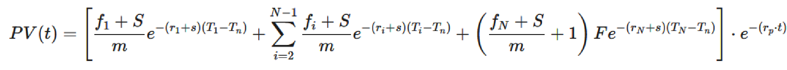
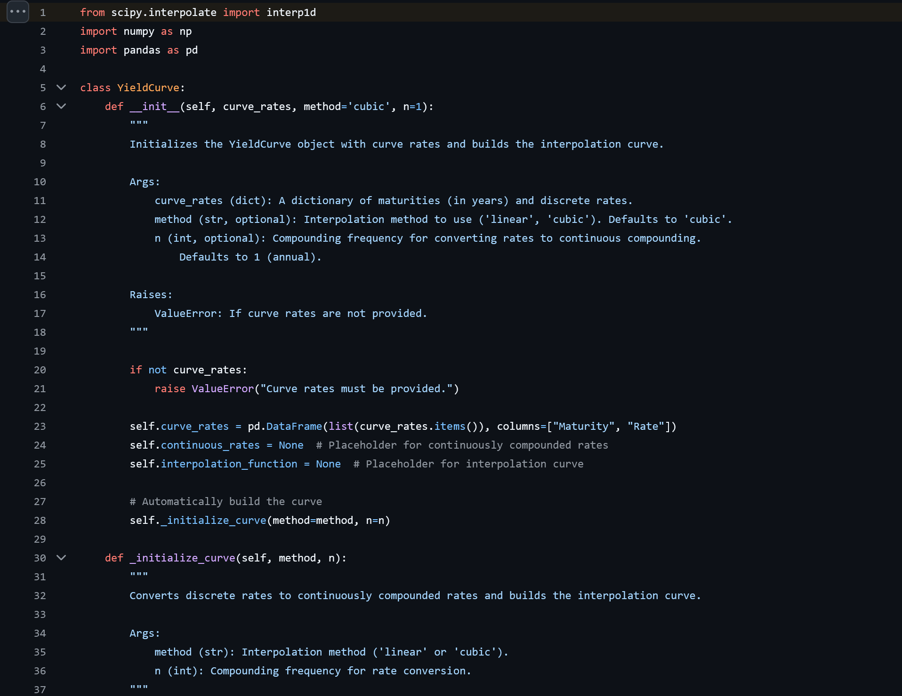

Floating-Rate Note Pricer
Pricing ModelProject link: GitHub
I was curious to understand the valuation mechanics of unique fixed-income products, I worked on a complete valuation engine for Floating-Rate Notes (FRNs). The tool should be capable of constructing a custom yield curve using cubic spline interpolation from user input. The tool also derives forward rates, and pricies the FRN with optional credit-spread overlays.
The formula I built is below:
Methodology
I began by building a YieldCurve module. This class takes any discrete term structure and converts the nominal rates to their continuous equivalents. Linear and cubic-spline interpolation methods are available.
The FRNPricer class handles valuation logic. It computes the first-period forward rate directly from the spot rate. For discounting, each coupon and principal cash flow is discounted using the appropriate rate plus an optional credit spread (r_i + s).
One key to the model: the ability to price an FRN between coupon periods. This is accomplished by incorporating an extra exponential term, allowing for valuation at any point in time. Finally, the model calculates accrued interest based on the actual day-count convention to accurately separate the dirty price from the clean price.
Code snippet:
Valuation Formula
The dirty price of the FRN at a given valuation time is calculated using the following continuous-compounding formula, which discounts each coupon and the final principal payment to a specified anchor date (T_n) before shifting the entire present value to the final valuation time ($t$).
PV(t) = [
(f₁ + S)/m * exp(-(r₁ + s) * (T₁ - Tₙ))
+ Σ [ (fᵢ + S)/m * exp(-(rᵢ + s) * (Tᵢ - Tₙ)) ] (for i = 2 to N-1)
+ [ ((fₙ + S)/m) + F ] * exp(-(rₙ + s) * (Tₙ - Tₙ))
] * exp(-(rₚ * t))Testing Flow
The config.py file holds all key inputs like the yield curve points and FRN terms. I designed it this way so that a user could test different scenarios simply by editing the config file. The pricing script runs from the command line and outputs both clean and dirty prices according to the specified configuration.
Project Outcomes
Through this project, I built a FRN pricing library from scratch. I tested it by comparing it with known market prices with friends in S&T, and the prices were roughly on-par with market prices. The project showcases my clean, defensive OOP design and effective configuration management. I implemented mathematically rigorous features, including continuous-compounding conversion, spline interpolation, forward-rate derivation, and dirty-to-clean price reconciliation, that mirror the functionality found in commercial risk systems.